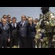

<!DOCTYPE html>
<html lang="en">
 <head>
<!-- Favicon -->
<link rel="shortcut icon" href="../../favicon.ico">
  <meta charset="utf-8"/>
  <title>
   Tunisian police allowed the gunman to massacre tourists for an hour before shooting him dead, witnesses claim
  </title>
  <meta content="Post on /v/Conspiracy from 2015-07-10 by shmegegy." name="description"/>
  <meta content="Tunisian police allowed the gunman to massacre tourists for an hour before shooting him dead, witnesses claim" property="og:title"/>
  <meta content="Post on /v/Conspiracy from 2015-07-10 by shmegegy." property="og:description"/>
  <link href="../../static/css/page.css" rel="stylesheet"/>
  <meta content="https://voat.conspiracy.hackliberty.org/thumbnails/bb/93/bb93ab35-17f7-4605-b66e-e936ccf830ec.jpg" property="og:image"/>
  <meta content="https://voat.conspiracy.hackliberty.org/v/conspiracy/240340.html" property="og:url"/>
  <meta content="width=device-width, initial-scale=1" name="viewport"/>
  <link href="https://voat.conspiracy.hackliberty.org/v/conspiracy/240340.html" rel="canonical"/>
  <meta content="article" property="og:type"/>
  <meta content="Voat /v/Conspiracy Archive" property="og:site_name"/>
  <meta content="en_US" property="og:locale"/>
  <meta content="summary_large_image" name="twitter:card"/>
  <meta content="Tunisian police allowed the gunman to massacre tourists for an hour before shooting him dead, witnesses claim" name="twitter:title"/>
  <meta content="Post on /v/Conspiracy from 2015-07-10 by shmegegy." name="twitter:description"/>
  <meta content="https://voat.conspiracy.hackliberty.org/thumbnails/bb/93/bb93ab35-17f7-4605-b66e-e936ccf830ec.jpg" name="twitter:image"/>
 </head>
</html>
<body class="dark">
 <div id="container">
  <!-- array (
  'submissionid' => 240340,
  'creationDate' => '2015-07-10 10:05:46',
  'domain' => 'independent.co.uk',
  'formattedContent' => NULL,
  'isAdult' => 0,
  'isAnonymized' => 0,
  'subverse' => 'Conspiracy',
  'thumbnail' => 'bb93ab35-17f7-4605-b66e-e936ccf830ec.jpg',
  'title' => 'Tunisian police allowed the gunman to massacre tourists for an hour before shooting him dead, witnesses claim',
  'url' => 'http://www.independent.co.uk/news/world/africa/tunisia-attack-police-allowed-gunman-to-massacre-british-tourists-for-an-hour-before-shooting-him-dead-witnesses-claim-10354005.html',
  'userName' => 'shmegegy',
  'archivedLink' => NULL,
  'archivedDomain' => NULL,
  'isDeleted' => 0,
) -->
  
<header>
  <nav class="navbar navbar-dark bg-primary">
    <a class="navbar-brand" href="../../index.html">v/Conspiracy Archive</a>
    <div class="navbar-collapse">
      <ul class="navbar-nav">
        <li class="nav-item">
          <a class="nav-link" href="../../date/page-1.html">Date</a>
        </li>
        <li class="nav-item">
          <a class="nav-link" href="../../comments/page-1.html">Comments</a>
        </li>
        <li class="nav-item">
          <a class="nav-link" href="../../search.html">Search</a>
        </li>
        <li class="nav-item dropdown">
          <a class="nav-link dropdown-toggle" href="#" id="navbarDropdown" role="button" 
             data-toggle="dropdown" aria-haspopup="true" aria-expanded="false">
            subreddits
          </a>
          <div class="dropdown-menu" aria-labelledby="navbarDropdown">
            <a class="dropdown-item" href="https://reddit.conspiracy.hackliberty.org">r/conspiracy</a>
            <a class="dropdown-item" href="https://reddit.pizzagate.hackliberty.org">r/pizzagate</a>
            <a class="dropdown-item" href="https://voat.conspiracy.hackliberty.org">v/conspiracy</a>
            <a class="dropdown-item" href="https://voat.pizzagate.hackliberty.org">v/pizzagate</a>
          </div>
        </li>
      </ul>
    </div>
  </nav>
</header>

  <div class="content" role="main">
   <div class="sitetable linklisting" id="siteTable">
    <div class="submission id-240340 link type-text" id="submission-240340">
     <a name="submissionTop">
     </a>
     <p class="parent">
     </p>
     <a class="thumbnail may-blank" href="http://www.independent.co.uk/news/world/africa/tunisia-attack-police-allowed-gunman-to-massacre-british-tourists-for-an-hour-before-shooting-him-dead-witnesses-claim-10354005.html" target="_self">
      
     </a>
     <div class="entry unvoted">
      <p class="title">
       <a class="title may-blank" href="http://www.independent.co.uk/news/world/africa/tunisia-attack-police-allowed-gunman-to-massacre-british-tourists-for-an-hour-before-shooting-him-dead-witnesses-claim-10354005.html" tabindex="1" target="_self" title="Tunisian police allowed the gunman to massacre tourists for an hour before shooting him dead, witnesses claim">
        Tunisian police allowed the gunman to massacre tourists for an hour before shooting him dead, witnesses claim
       </a>
       <span class="domain">
        (
        <a href="https://archive.searchvoat.co/search.php?d=independent.co.uk">
         independent.co.uk
        </a>
        )
       </span>
      </p>
      <p class="tagline">
       submitted
       <time datetime="2015-07-10T10:05:46+00:00" title="07/10/2015 10:05:46 AM">
        2015-07-10T10:05
       </time>
       by
       <span class="userattrs">
        <a class="author may-blank" href="https://archive.searchvoat.co/search.php?u=shmegegy">
         shmegegy
        </a>
       </span>
      </p>
      <ul class="flat-list buttons">
       <li class="first">
        <a class="comments may-blank" href="https://archive.searchvoat.co/v/Conspiracy/240340" rel="nofollow">
         3 comments
        </a>
       </li>
      </ul>
     </div>
     <div class="child">
     </div>
     <div class="clearleft">
     </div>
    </div>
    <div class="clearleft">
    </div>
   </div>
   <div class="horizontal-line">
   </div>
   <div class="commentarea">
    <div class="sitetable nestedlisting" id="siteTable">
     <div class="child id-765291 comment even" style="">
      <div class="entry unvoted">
       <div class="noncollapsed" id="765291" style=";">
        <p class="tagline">
         <a class="author may-blank" href="https://archive.searchvoat.co/search.php?u=Dysnomia">
          Dysnomia
         </a>
         <span class="userattrs">
         </span>
         <time datetime="2015-07-10T10:36:02+00:00" title="7/10/2015 10:36:02 AM">
          2015-07-10T10:36
         </time>
        </p>
        <div class="usertext-body may-blank-within" id="commentContent-765291">
         <div class="md">
          <p>
           <blockquote>
            <p>
             The armed policemen who arrived at the beach were “paralysed by fear”, a Belgian tourist told The Independent, speaking anonymously because she said she was afraid. “Some youths told the police, ‘We’re not afraid of dying, give it [the gun] to us.’”
The youths took the gun and ran up to the pool area, shooting in the air to get his attention, but then the gun jammed. The gunman turned around, threw a grenade at them and chased after them.
            </p>
           </blockquote>
           <p>
            Badass kids. Bitchass cops. If Tunisian cops are anything like American cops they must have had a stand-down order from above. Not to say that a bitchass american cop is an impossibility, but they shoot people dead over far less than this.
           </p>
           <p>
            Come to think of it, most mass-murderers end up caught unmolested. It's usually the skittles theives who end up riddled with police hollow points.
           </p>
          </p>
         </div>
        </div>
        <ul class="flat-list buttons">
         <li class="first">
          <a class="bylink" href="https://archive.searchvoat.co/v/Conspiracy/240340/765291" rel="nofollow">
           link
          </a>
         </li>
        </ul>
       </div>
      </div>
      <div class="child id-796128 comment odd" style="">
       <div class="entry unvoted">
        <div class="noncollapsed" id="796128" style=";">
         <p class="tagline">
          <a class="author may-blank" href="https://archive.searchvoat.co/search.php?u=Sciency">
           Sciency
          </a>
          <span class="userattrs">
          </span>
          <time datetime="2015-07-10T20:59:10+00:00" title="7/10/2015 8:59:10 PM">
           2015-07-10T20:59
          </time>
         </p>
         <div class="usertext-body may-blank-within" id="commentContent-796128">
          <div class="md">
           <p>
            <blockquote>
             <p>
              the gun jammed
             </p>
            </blockquote>
            <p>
             Maybe the cops knew the quality of the gear they had...
            </p>
            <p>
             With that said, kids drawing fire from other innocent's is beyond a brave action. Gives me a bit of hope for humanity, ya know?
            </p>
           </p>
          </div>
         </div>
         <ul class="flat-list buttons">
          <li class="first">
           <a class="bylink" href="https://archive.searchvoat.co/v/Conspiracy/240340/796128" rel="nofollow">
            link
           </a>
          </li>
         </ul>
        </div>
       </div>
       <div class="child id-825959 comment even" style="">
        <div class="entry unvoted">
         <div class="noncollapsed" id="825959" style=";">
          <p class="tagline">
           <a class="author may-blank" href="https://archive.searchvoat.co/search.php?u=Dysnomia">
            Dysnomia
           </a>
           <span class="userattrs">
           </span>
           <time datetime="2015-07-11T05:28:03+00:00" title="7/11/2015 5:28:03 AM">
            2015-07-11T05:28
           </time>
          </p>
          <div class="usertext-body may-blank-within" id="commentContent-825959">
           <div class="md">
            <p>
             <p>
              I bet it was a semi-auto and the kid limpwristed it. Not a hard mistake to make without proper training.
             </p>
            </p>
           </div>
          </div>
          <ul class="flat-list buttons">
           <li class="first">
            <a class="bylink" href="https://archive.searchvoat.co/v/Conspiracy/240340/825959" rel="nofollow">
             link
            </a>
           </li>
          </ul>
         </div>
        </div>
       </div>
      </div>
     </div>
    </div>
   </div>
  </div>
 </div>
<!-- Footer Section -->
<footer class="container-fluid mt-3">
  <p class="small mb-0">
    /v/conspiracy archive has 42504 posts and 159856 total comments.
    <a href="https://git.hackliberty.org/c0mmando/voat-conspiracy-archive/">source code</a>.
  </p>
</footer>

<script src="../../static/js/jquery-3.7.1.slim.min.js"></script>
<script src="../../static/js/comments-toggle.js"></script>

</body>
